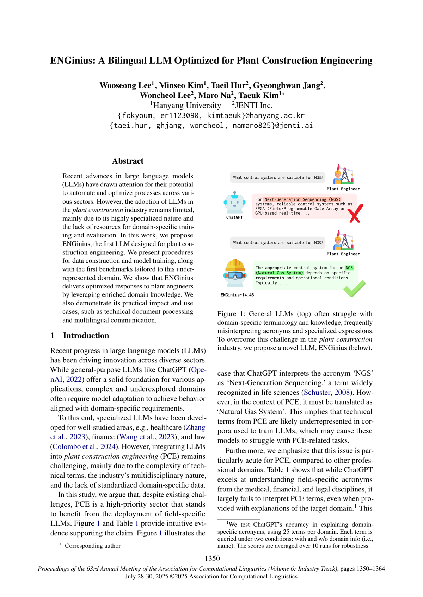
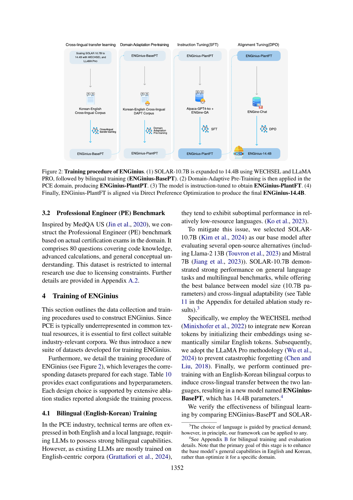

ENGinius: A Bilingual LLM Optimized for Plant Construction Engineering
ACL 2025 Industry
Wooseong Lee, Minseo Kim, Taeil Hur, Gyeong Hwan Jang, Woncheol Lee, Maro Na, Taeuk Kim
One-Line Summary
A bilingual (Korean-English) large language model optimized for the plant construction engineering domain, presented at ACL 2025 Industry Track. Addresses the gap between general-purpose LLMs and domain-specific needs in industrial engineering.

Figure 1. General LLMs (top) often struggle with domain-specific terminology and knowledge. ENGinius (below) delivers optimized responses for plant construction engineering.
Key Points
Domain-specific optimization for plant construction engineering
Bilingual capability (Korean-English) for cross-lingual industrial applications
Industry track paper demonstrating real-world applicability

Figure 2. Training procedure of ENGinius: (1) Base model expansion with WECHSEL and LLaMA PRO, (2) Domain-Adaptive Pre-Training, (3) Instruction tuning, (4) DPO alignment to produce ENGinius-14.4B.